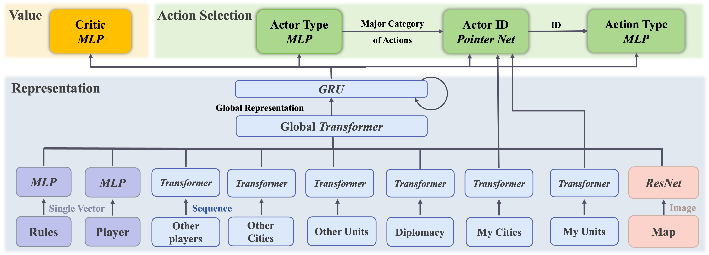
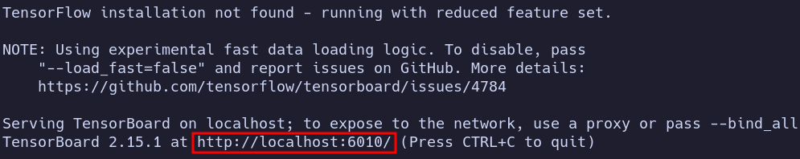
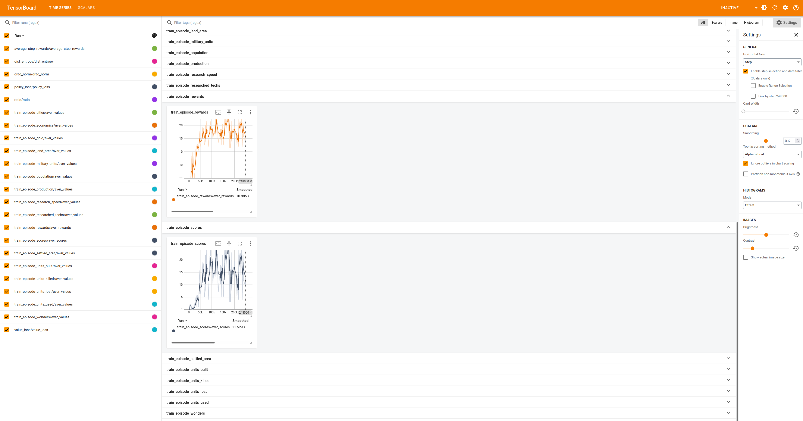

Tensor Agent
Welcome to Civrealm Tensor Agent! This documentation will guide you through the process of training tensor-based agents, specifically using the Proximal Policy Optimization (PPO), in the Civrealm Environment. We will first provide an overview of the Civrealm Tensor Env, followed by instructions on how to use the civrealm-tensor-baseline repository to train a PPO agent on this environment.
🌏 Civrealm Tensor Environment
The Civrealm Tensor Environment is a reinforcement learning environment wrapped upon Civrealm Base Env specifically designed for training agents using tensor-based algorithms. This environment
- offer immutable spaces for mutable observation and actions,
- provides flattened, tensorized observation and action spaces,
- restrict available actions in order to reduce meaningless actions,
- offers delta game score as a basic reward for RL agents,
- provide parallel environments with batched inputs and outputs for efficient training,
and various modular wrappers which are open to customize your own environment.
Quick Start
Start a single FreecivTensor environment :
Start a parallel tensor environment with 8 parallel FreecivTensor envs:
# Training Fullgame
env = gymnasium.make("civtensor/TensorBaselineEnv-v0", parallel_number=8,task="fullgame")
# Training Minitasks
# env = gymnasium.make("civtensor/TensorBaselineEnv-v0", parallel_number=8,task="development_build_city normal")
obs, info = env.reset()
Observation
The observation space is a gymnasium.Dict() consisting of 9 subspaces with keys listed below.
Observations can be immutable and mutable.
Immutable Obs: map, player, rules.
hey have fixed dimensions through the game-play.
Immutable Observations
| Immutables | Field | Dimension |
|---|---|---|
| rules | build_cost | (120,) |
| map | status | (84, 56, 3) |
| terrain | (84, 56, 14) | |
| extras | (84, 56, 34) | |
| output | (84, 56, 6) | |
| tile_owner | (84, 56, 1) | |
| city_owner | (84, 56, 1) | |
| unit | (84, 56, 52) | |
| unit_owner | (84, 56, 1) | |
| player | score | (1,) |
| is_alive | (1,) | |
| turns_alive | (1,) | |
| government | (6,) | |
| target_government | (7,) | |
| tax | (1,) | |
| science | (1,) | |
| luxury | (1,) | |
| gold | (1,) | |
| culture | (1,) | |
| revolution_finishes | (1,) | |
| science_cost | (1,) | |
| tech_upkeep | (1,) | |
| techs_researched | (1,) | |
| total_bulbs_prod | (1,) | |
| techs | (87,) |
Mutable Obs: unit, city, others_unit, others_city, others_player, dipl.
The number of units, cities, and other mutable observations are constantly changing. Nevertheless, we truncate or pad mutable entities to a fixed size.
| Mutables | Size |
|---|---|
| unit | 128 |
| city | 32 |
| others_unit | 128 |
| others_city | 64 |
| others_player | 10 |
| dipl | 10 |
Mutable Observations for a Single Entity
| Mutables | Field | Dimension per Entity |
|---|---|---|
| city | owner | (1,) |
| size | (1,) | |
| x | (1,) | |
| y | (1,) | |
| food_stock | (1,) | |
| granary_size | (1,) | |
| granary_turns | (1,) | |
| production_value | (120,) | |
| city_radius_sq | (1,) | |
| buy_cost | (1,) | |
| shield_stock | (1,) | |
| disbanded_shields | (1,) | |
| caravan_shields | (1,) | |
| last_turns_shield_surplus | (1,) | |
| improvements | (68,) | |
| luxury | (1,) | |
| science | (1,) | |
| prod_food | (1,) | |
| surplus_food | (1,) | |
| prod_gold | (1,) | |
| surplus_gold | (1,) | |
| prod_shield | (1,) | |
| surplus_shield | (1,) | |
| prod_trade | (1,) | |
| surplus_trade | (1,) | |
| bulbs | (1,) | |
| city_waste | (1,) | |
| city_corruption | (1,) | |
| city_pollution | (1,) | |
| state | (5,) | |
| turns_to_prod_complete | (1,) | |
| prod_process | (1,) | |
| ppl_angry | (6,) | |
| ppl_unhappy | (6,) | |
| ppl_content | (6,) | |
| ppl_happy | (6,) | |
| before_change_shields | (1,) | |
| unit | owner | (1,) |
| health | (1,) | |
| veteran | (1,) | |
| x | (1,) | |
| y | (1,) | |
| type_rule_name | (52,) | |
| type_attack_strength | (1,) | |
| type_defense_strength | (1,) | |
| type_firepower | (1,) | |
| type_build_cost | (1,) | |
| type_convert_time | (1,) | |
| type_obsoleted_by | (53,) | |
| type_hp | (1,) | |
| type_move_rate | (1,) | |
| type_vision_radius_sq | (1,) | |
| type_worker | (1,) | |
| type_can_transport | (1,) | |
| home_city | (1,) | |
| moves_left | (1,) | |
| upkeep_food | (1,) | |
| upkeep_shield | (1,) | |
| upkeep_gold | (1,) | |
| others_city | owner | (1,) |
| size | (1,) | |
| improvements | (68,) | |
| style | (10,) | |
| capital | (1,) | |
| occupied | (1,) | |
| walls | (1,) | |
| happy | (1,) | |
| unhappy | (1,) | |
| others_unit | owner | (1,) |
| veteran | (1,) | |
| x | (1,) | |
| y | (1,) | |
| type | (52,) | |
| occupied | (1,) | |
| transported | (1,) | |
| hp | (1,) | |
| activity | (1,) | |
| activity_tgt | (1,) | |
| transported_by | (1,) | |
| others_player | score | (1,) |
| is_alive | (2,) | |
| love | (12,) | |
| diplomatic_state | (8,) | |
| techs | (87,) | |
| dipl | type | (20,) |
| give_city | (32,) | |
| ask_city | (64,) | |
| give_gold | (16,) | |
| ask_gold | (16,) |
Action
In tensor environment, the complete action space is
spaces.Dict(
{
"actor_type": spaces.Discrete(len(self.actor_type_list)),
"city_id": spaces.Discrete(self.action_config["resize"]["city"]),
"city_action_type": spaces.Discrete(
sum(self.action_config["action_layout"]["city"].values())
),
"unit_id": spaces.Discrete(self.action_config["resize"]["unit"]),
"unit_action_type": spaces.Discrete(
sum(self.action_config["action_layout"]["unit"].values())
),
"dipl_id": spaces.Discrete(self.action_config["resize"]["dipl"]),
"dipl_action_type": spaces.Discrete(
sum(self.action_config["action_layout"]["dipl"].values())
),
"gov_action_type": spaces.Discrete(
sum(self.action_config["action_layout"]["gov"].values())
),
"tech_action_type": spaces.Discrete(
sum(self.action_config["action_layout"]["tech"].values())
),
}
)
The actor_type indicate which actor type this action belongs to, the value \(\in [0\dots5]\) indicating city,unit,gov,dipl,tech,end-turn respectively.
For a mutable type $mutable, ${mutable}_id indicates the position of the unit to take this action in the list of entities. For example, unit_id=0 might indicate a Settler located at a specific tile.
${actor_type}_action_type is an action index which can be translated into a specific action, for example goto_8 or stop_negotiation.
Tip
Although the full action space is a Cartesion product of 9 subspaces, the actor_type will determine which category of entity should execute this action, and ${actor_type}_id will determine which entity should execute a specific action ${actor_type}_action_type.
Thus it suffices for the env to only look at 3 tuples: (actor_type, ${actor_type}_id, ${actor_type}_action_type), and it's legitimate to pass a 3-tuple if their values and types are compatible.
Action Space Details
| Category | Actions | Count |
|---|---|---|
| city | city_work_None_ | 4 |
| city_unwork_None_ | 4 | |
| city_work_ | 20 | |
| city_unwork_ | 20 | |
| city_buy_production | 1 | |
| city_change_specialist_ | 3 | |
| city_sell | 35 | |
| produce | 120 | |
| unit | transform_terrain | 1 |
| mine | 1 | |
| cultivate | 1 | |
| plant | 1 | |
| fortress | 1 | |
| airbase | 1 | |
| irrigation | 1 | |
| fallout | 1 | |
| pollution | 1 | |
| keep_activity | 1 | |
| paradrop | 1 | |
| build_city | 1 | |
| join_city | 1 | |
| fortify | 1 | |
| build_road | 1 | |
| build_railroad | 1 | |
| pillage | 1 | |
| set_homecity | 1 | |
| airlift | 1 | |
| upgrade | 1 | |
| deboard | 1 | |
| board | 1 | |
| unit_unload | 1 | |
| cancel_order | 1 | |
| goto_ | 8 | |
| attack_ | 8 | |
| conquer_city_ | 8 | |
| spy_bribe_unit_ | 8 | |
| spy_steal_tech_ | 8 | |
| spy_sabotage_city_ | 8 | |
| hut_enter_ | 8 | |
| embark_ | 8 | |
| disembark_ | 8 | |
| trade_route_ | 9 | |
| marketplace_ | 9 | |
| embassy_stay_ | 8 | |
| investigate_spend_ | 8 | |
| dipl | stop_negotiation_ | 1 |
| accept_treaty_ | 1 | |
| cancel_treaty_ | 1 | |
| cancel_vision_ | 1 | |
| add_clause_ShareMap_ | 2 | |
| remove_clause_ShareMap_ | 2 | |
| add_clause_ShareSeaMap_ | 2 | |
| remove_clause_ShareSeaMap_ | 2 | |
| add_clause_Vision_ | 2 | |
| remove_clause_Vision_ | 2 | |
| add_clause_Embassy_ | 2 | |
| remove_clause_Embassy_ | 2 | |
| add_clause_Ceasefire_ | 2 | |
| remove_clause_Ceasefire_ | 2 | |
| add_clause_Peace_ | 2 | |
| remove_clause_Peace_ | 2 | |
| add_clause_Alliance_ | 2 | |
| remove_clause_Alliance_ | 2 | |
| trade_tech_clause_Advance_ | 174 | |
| remove_clause_Advance_ | 174 | |
| trade_gold_clause_TradeGold_ | 30 | |
| remove_clause_TradeGold_ | 30 | |
| trunc_trade_city_clause_TradeCity_ | 96 | |
| trunc_remove_clause_TradeCity_ | 96 | |
| gov | change_gov_Anarchy | 1 |
| change_gov_Despotism | 1 | |
| change_gov_Monarchy | 1 | |
| change_gov_Communism | 1 | |
| change_gov_Republic | 1 | |
| change_gov_Democracy | 1 | |
| set_sci_luax_tax | 66 | |
| tech | research | 87 |
You can copy the above HTML table and use it in your HTML file or any other HTML-supported platform.
🤖 Network Architecture for a Tensor Agent

To effectively handle multi-source and variable-length inputs, we draw inspiration from AlphaStar and implement a serialized hierarchical feature extraction and action selection approach, as shown above. This method involves generating layered actions and predicting value function outputs, and our neural network architecture comprises three main components: representation learning, action selection, and value estimation.
Representation. At the representation level, we adopt a hierarchical structure. In the lower layer, we extract controller features using various models like MLP, Transformer, and CNN, depending on whether the input is a single vector, sequence, or image-based. These extracted features are then fed into a transformer to facilitate attention across different entities, creating globally meaningful representations. Additionally, we utilize an RNN to combine the current-state features with the memory state, enabling conditional policy decisions based on the state history.
Action selection. At the action selection level, we leverage the learned representations to make decisions. In the actor selection module, we determine the primary action category to be executed, including options like unit, city, government, technology, diplomacy, or termination. Subsequently, we employ a pointer network to select the specific action ID to be executed, followed by the determination of the exact action to be performed.
Value estimation. To enable the use of an actor-critic algorithm, we incorporate a value prediction head after the representation learning phase. This shared representation part of the network benefits both the actor and critic, enhancing training efficiency.
Training. We use the Proximal Policy Optimization (PPO) algorithm to train the agent. To mitigate the on-policy sample complexity of PPO, we harness Ray for parallelizing tensor environments, optimizing training speed and efficiency.
🏃 Using civrealm-tensor-baseline Repository
The civrelam-tensor-baseline repository is a collection of code and utilities that provide a baseline implementation for training reinforcement learning agents using tensor-based algorithms.
It includes an implementation of the PPO algorithm, which we will use to train our agents in the Civrealm Tensor Environment.
🏌️ Getting Started
To get started, follow these steps:
-
Clone the civrealm-tensor-baseline repository from GitHub and enter the directory:
-
Install the required dependencies by running:
-
Training PPO baseline for fullgame
In default, this would start a runner with the config specified in
civrealm-tensor-baseline/civtensor/configs/. -
OR Train PPO baseline for minitasks:
In default, this would start a sequence of runners each with a minitask config specified in
civrealm-tensor-baseline/examples/run_configs. Either will start the training process, allowing the agent to interact with the environment, collect experiences, and update its policy using the PPO algorithm. -
Monitor the training progress and evaluate the agent's performance, using the provided metrics and visualization tools in the civrealm-tensor-baseline repository.
The output of the last command should return a url.  Visit this url with your favorite web browser, and you can view your agent performance in real time. 
Congratulations! You have successfully set up the Civrealm Tensor Agent and started training a PPO agent on the Civrealm Tensor Environment, using the civrealm-tensor-baseline repository.
Runner Configuration
The default configs reside in civtensor/configs/
freeciv_tensor_env.yaml defines environment-related properties. You may specify which task to run by specifying task_name.
- Acceptable
task_nameare"fullgame"or"$minitask_type $minitask_difficulty".
Note
For available mini-task types and difficulties, please check minigame
ppo.yaml defines environment-related properties. You may specify which task to run by specifying task_name.
Details of ppo.yaml
seed:
# whether to use the specified seed
seed_specify: False
# seed
seed: 1
device:
# whether to use CUDA
cuda: True
# whether to set CUDA deterministic
cuda_deterministic: True
# arg to torch.set_num_threads
torch_threads: 4
train:
# number of parallel environments for training data collection
n_rollout_threads: 8
# number of total training steps
num_env_steps: 10000000
# number of steps per environment per training data collection
episode_length: 125
# logging interval
log_interval: 1
# evaluation interval
eval_interval: 5
# whether to use ValueNorm
use_valuenorm: True
# whether to use linear learning rate decay
use_linear_lr_decay: False
# whether to consider the case of truncation when an episode is done
use_proper_time_limits: True
# if set, load models from this directory; otherwise, randomly initialise the models
model_dir: ~
eval:
# whether to use evaluation
use_eval: True
# number of parallel environments for evaluation
n_eval_rollout_threads: 1
# number of episodes per evaluation
eval_episodes: 20
render:
# whether to use render
use_render: False
# number of episodes to render
render_episodes: 10
model:
# hidden dimension
hidden_dim: 256
# hidden dimension for rnn
rnn_hidden_dim: 1024
# number of heads in transformer
n_head: 2
# number of layers in transformer
n_layers: 2
# dropout probability
drop_prob: 0
# number of rnn layers
n_rnn_layers: 2
# initialization method for network parameters, choose from xavier_uniform_, orthogonal_, ...
initialization_method: orthogonal_
# gain of the output layer of the network.
gain: 0.01
# length of data chunk; only useful when use_recurrent_policy is True; episode_length has to be a multiple of data_chunk_length
data_chunk_length: 10
# actor learning rate
lr: 0.0005
# eps in Adam
opti_eps: 0.00001
# weight_decay in Adam
weight_decay: 0
algo:
# ppo parameters
# number of epochs for actor update
ppo_epoch: 5
# whether to use clipped value loss
use_clipped_value_loss: True
# clip parameter
clip_param: 0.2
# number of mini-batches per epoch
num_mini_batch: 1
# coefficient for entropy term in actor loss
entropy_coef: 0.01
# coefficient for value loss
value_loss_coef: 0.001
# whether to clip gradient norm
use_max_grad_norm: True
# max gradient norm (0.5?)
max_grad_norm: 10.0
# whether to use Generalized Advantage Estimation (GAE)
use_gae: True
# discount factor
gamma: 0.99
# GAE lambda
gae_lambda: 0.95
# whether to use huber loss
use_huber_loss: True
# huber delta
huber_delta: 10.0
logger:
# logging directory
log_dir: "./results"
Conclusion
In this guide, we introduced the Civrealm Tensor Environment and explained how to use the civrealm-tensor-baseline repository to train a PPO agent on this environment.
We encourage you to explore the various features and customization options available, and experiment with different reinforcement learning algorithms to further enhance your agent's performance. Happy training!